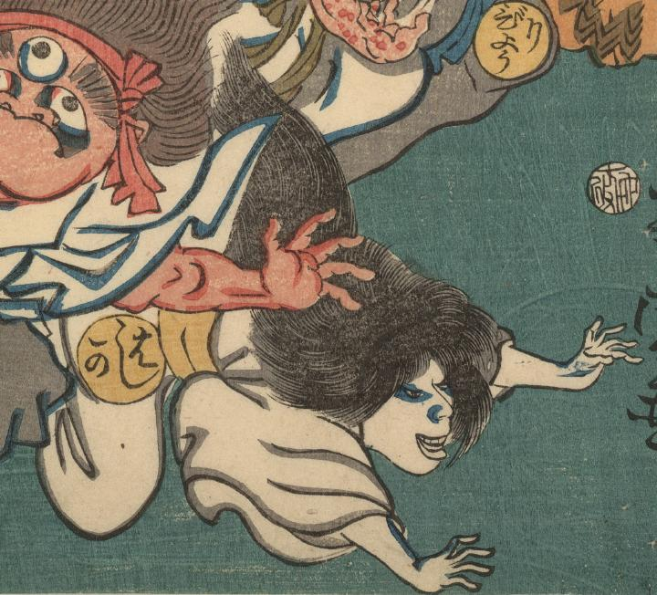

麻疹；ハシカ

武人に追い立てられるはしかの化物。髪は長く色白で女のようである。白衣をまとい転げるように逃げている。
著作者：歌川芳虎／出典：親書誌：U426_nichibunken_0007：麻疹後の養生；ハシカノチノヨウジョウ／日付：2006／資源識別子：U426_nichibunken_0007_0001_0002
Copyright (c)2010- International Research Center for Japanese Studies, Kyoto, Japan. All rights reserved.